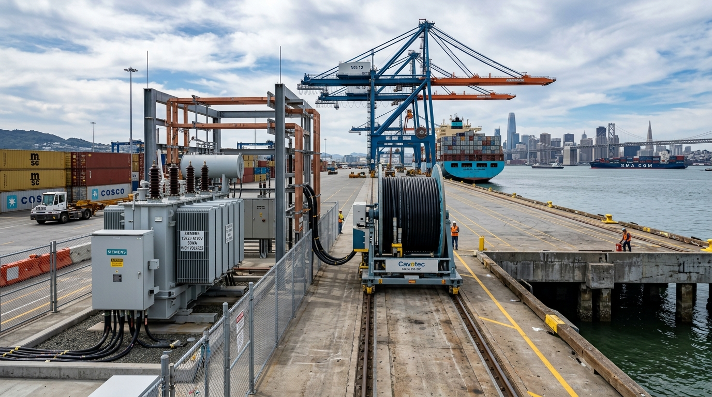

Engineering and operational roadmap for deploying 4 state-of-the-art automated Ship-to-Shore (STS) Super Post-Panamax and Automated Stacking Cranes (ARMG/ASC) across the San Francisco maritime waterfront.
Depending on whether these 4 cranes are configured for quay-side berthing (Ship-to-Shore Super Post-Panamax) or automated yard management (ARMG/ASC), below is the comprehensive engineering comparison.
| Parameter | Ship-to-Shore (STS) Automated Cranes | Automated Stacking Cranes (ARMG / ASC) |
|---|---|---|
| Primary Role | QUAYSIDE Unloading / loading container ships at berth | YARD SIDE Yard stacking & direct truck / rail transfer |
| Lifting Capacity | 65 to 80+ tons (Twin-lift / Tandem container hoist) | 40 to 65 tons (Single & Twin-twenty container lifts) |
| Reach / Span | Up to 22–24 container rows wide (~70m outreach jib) | Span over 6–10 container rows + dedicated truck lane |
| Lift Height | Up to 140–150 ft (42–45m) clear height above dock | 1 over 5 to 1 over 6 standard high-cube containers |
| Power Drive | 100% All-Electric (High Voltage Shore Power 12kV–25kV) | All-Electric (Heavy-duty E-Busbar or Cable Reel system) |
| Control Mode | Remote Operator Station (ROS) + semi-automation | Fully automated autonomous cycles with remote intervention |
Engineered for ultra-large container vessels (ULCVs) up to 24,000 TEU. Features 70m outreach, dual-hoist twin-lift spreaders, and laser anti-collision berthing telemetry.
High-density yard stacking running on dedicated rail runways. Automated spreader positioning executes block stacking and train intermodal loadouts 24/7 without cab drivers.
Modern automated gantry cranes eliminate high-altitude manual cabs, replacing them with integrated artificial intelligence, sub-millimeter LiDAR sensors, and automated Terminal Operating System scheduling.
Crane drivers work from a temperature-controlled, ergonomic office control room using curved 4K multi-screen monitors, HD camera feeds, and precision joysticks instead of sitting 150 ft in the air.
Integrated high-speed cameras on the spreader scan container numbers, ISO codes, hazardous placards, seal integrity, and structural damage in real time upon container pickup.
Laser scanners (LiDAR), 3D spatial vision, and predictive electronic anti-sway algorithms calculate hoist inertia and wind load to achieve millimetric container landing without manual swaying.
Direct real-time API sync with industry-standard TOS engines like Navis N4, CyberLogitec, or Tops to automatically route moves, manage vessel stowage, and optimize yard stacking order.
Integrating 4 automated gantry cranes at San Francisco maritime berths (Pier 80, Pier 94/96, or inland intermodal yards) requires strict civil foundation upgrades, zero-emission CARB/BAAQMD electrical grid connections, and Bay Bridge air draft navigation clearance.
Pier 80 and Pier 94/96 maritime berths feature wharf design loads ranging from 800 to 1,000 lbs/sq.ft. New automated cranes place massive dynamic loads during high-speed acceleration and container landings.
California Air Resources Board (CARB) and the Bay Area Air Quality Management District (BAAQMD) mandate zero-emission port operations. All 4 cranes operate 100% on electric grid power.
Autonomous gantry movements require deterministic, low-latency data communication and physical zone interlocks to protect personnel and equipment.
Procuring and deploying 4 automated gantry cranes involves global turnkey manufacturers, world-class electrical drive engineering, and standardized TOS scheduling software.
Simulate electrical regeneration savings from container lowering cycles and visualize tidal air draft clearances under the SF-Oakland Bay Bridge.
Click any 4K photo or architectural asset below to open in full-screen ultra-high definition.

Request detailed structural piling studies, electrical single-line diagrams, or schedule an on-site technical inspection at Pier 80 / Pier 94/96 for your container vessel line.